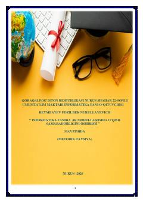

IFInformatika fanini 4K modeli asosida oʻqitish boʻyicha metodik qoʻllanma.
Ushbu metodik tavsiya informatika fani oʻqituvchilari uchun 4K modeli asosida dars samaradorligini oshirish usullarini yoritadi. Qoʻllanmada interfaol metodlar, dars ishlanmalari va pedagogik texnologiyalarni amaliyotda qoʻllash boʻyicha koʻrsatmalar keltirilgan.